Gestione Deleghe
Una panoramica dei flussi relativi alla gestione delle deleghe, per orientarti passo dopo passo.
01.
Inserimento deleghe
Panoramica sull'inserimento di una nuova delega.
Punto di accesso
La voce di menù
Dalla dashboard è possibile accedere alle principali sezioni tramite le voci di menu.
Menu a tendina
Cliccando sulla voce "Gestione e Consultazione" viene visualizzato un menu a tendina, nella sezione "Gestione Deleghe", è possibile accedere alla voce "Gestione Deleghe".
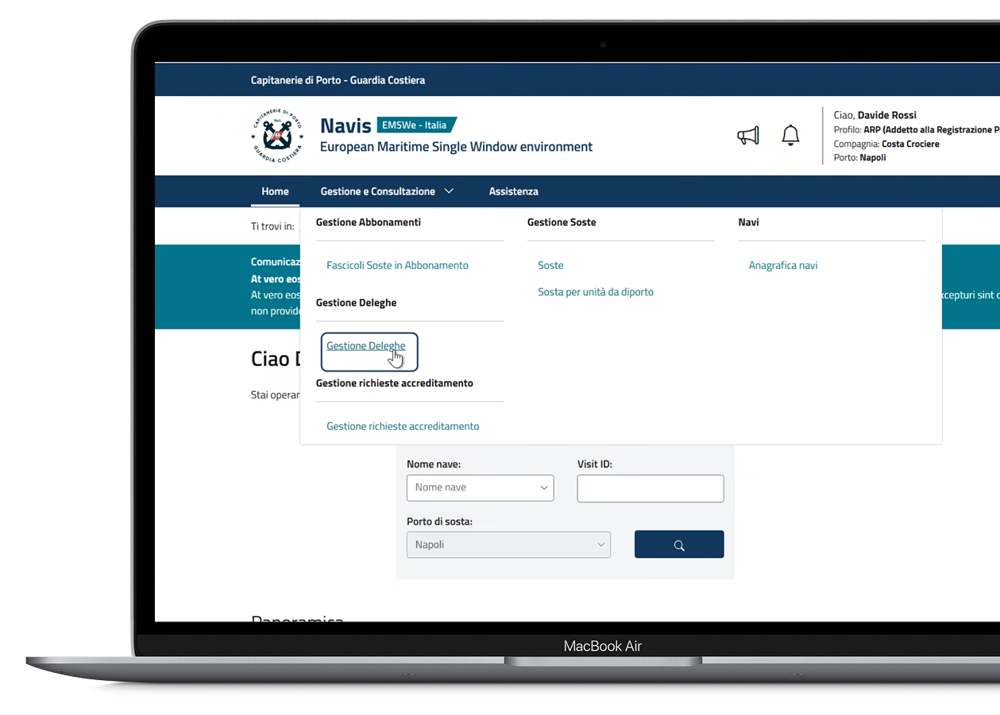
Creazione di una Delega
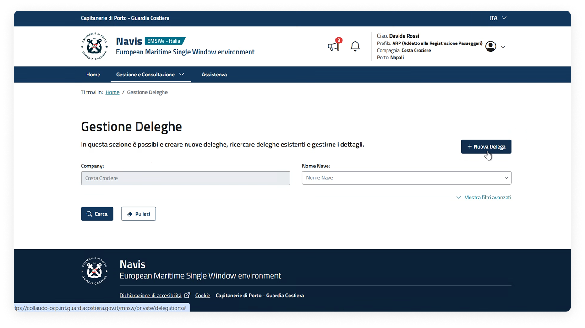
Dopo aver effettuato l'accesso alla pagina di "Gestione deleghe", cliccare sul pulsante "Nuova delega" per avviare il flusso di creazione.
Inserimento deleghe
Scelta della tipologia di delega: Nuova delega e Delega generata extra-sistema
Tipologia delega: "Nuova delega"
Creazione di una nuova delega tramite selezione della voce "Nuova delega" dal menu a tendina.
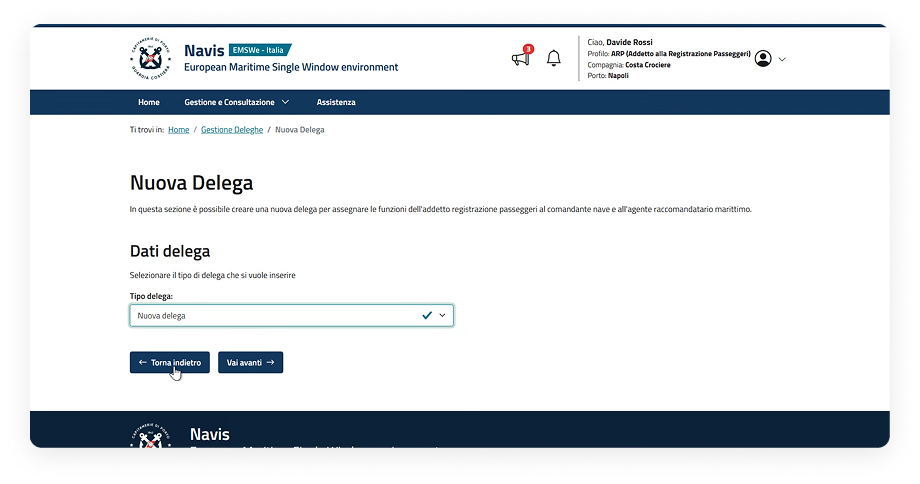
Tipologia delega: "Delega generata extra-sistema"
Creazione di una Delega generata extra-sistema tramite selezione della voce dal menu a tendina.
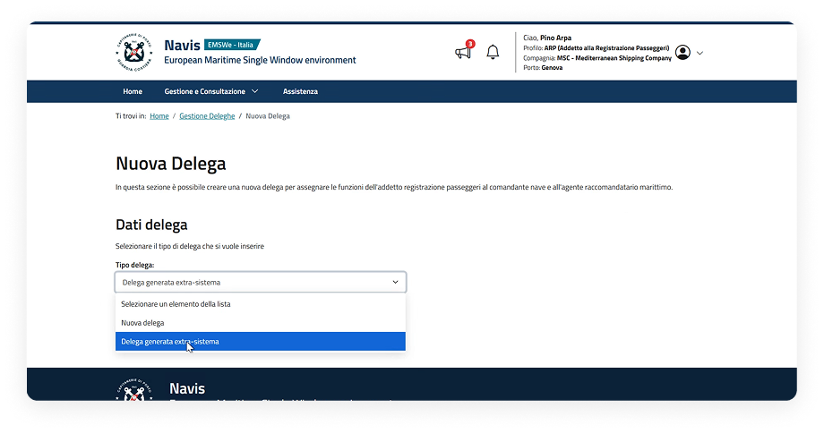
Inserimento Nuova Delega
Step di creazione di una nuova delega
Dopo aver selezionato "Nuova delega", l'utente dovrà procedere seguendo i passaggi sottostanti.
STEP 1
Dati delegato
Consente di ricercare e selezionare l'utente a cui assegnare la delega.
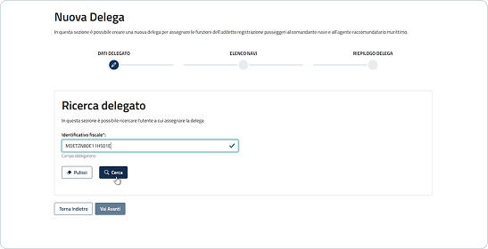
STEP 2
Elenco navi
Consente di selezionare una o più navi interessate alla delega.
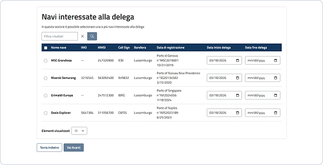
STEP 3
Riepilogo
Consente di visualizzare il riepilogo delle informazioni inserite negli step precedenti e procedere con il Salvataggio.
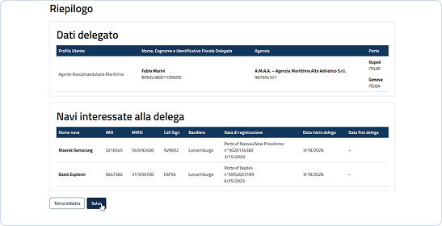
Dati delegato
Ricerca dell'utente
Ricercare l'utente a cui assegnare la delega inserendo l'identificativo fiscale e successivamente cliccando "Cerca".
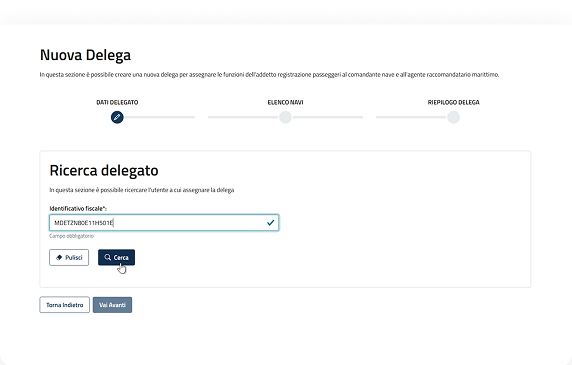
Aggiunta del porto
Una volta aggiunti uno o più delegati, selezionare uno o più porti tramite il menu a tendina.
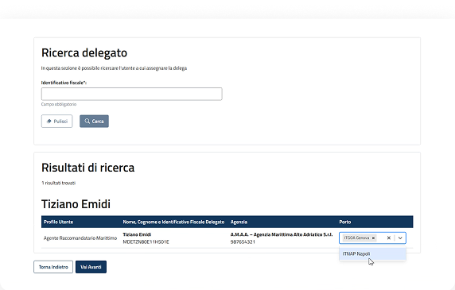
Selezione profilo e step successivo
Selezionare uno o più utenti e proseguire allo step successivo cliccando il pulsante "Vai avanti".
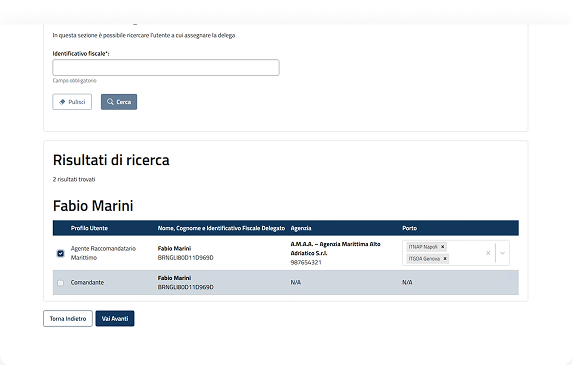
Elenco navi
Visualizzazione navi interessate
Il sistema mostra l'elenco delle navi assegnate all'addetto registrazione passeggeri. L'utente ha la possibilità di filtrare i risultati per parola chiave.
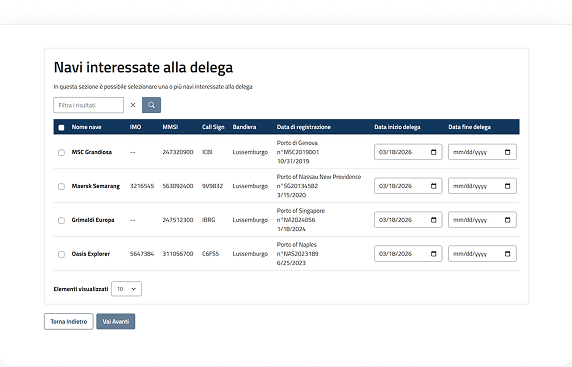
Selezione navi
Selezionare una o più navi interessate alla delega tramite le checkbox. Eventualmente modificare la data di inizio delega proposta dal sistema e eventualmente inserire una data di fine delega.
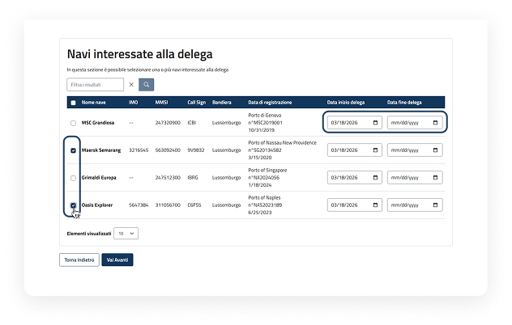
Verifica e step successivo
Verificata la corretta delle informazioni inserite, selezionare il pulsante "Vai avanti" per procedere.
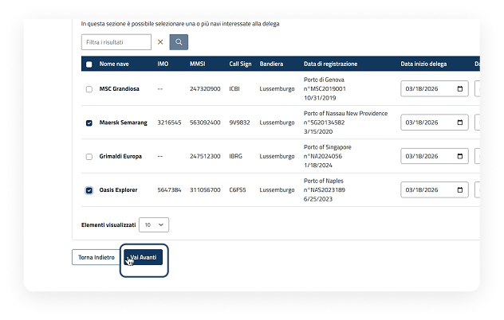
Riepilogo
Visualizzazione riepilogo e salvataggio
Nell'ultimo passaggio di riepilogo è possibile consultare tutte le informazioni inserite. Cliccare "Salva" per proseguire. Il sistema mostra una finestra di conferma. Cliccare "Conferma" per salvare.
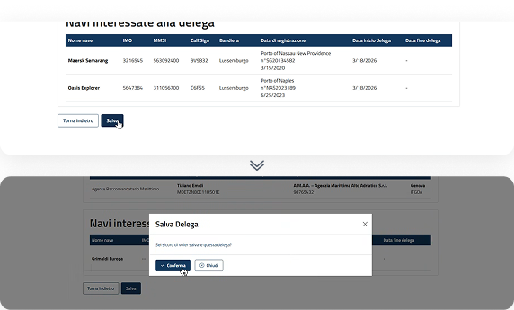
Dettaglio delega
All'interno del dettaglio è possibile visualizzare i dati generali, dati del delegante, dati del delegato e le navi interessate alla delega.
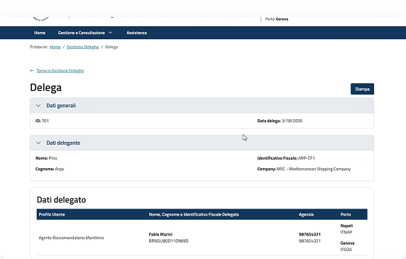
Azioni disponibili
Le azioni disponibili all'interno del dettaglio della delega saranno quelle di modifica e eliminazione tramite gli appositi pulsanti.
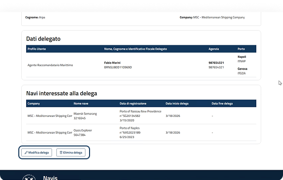
Inserimento delega generata extra sistema
Step di creazione di una delega generata extra sistema
Dopo aver selezionato "Delega generata extra sistema", l'utente dovrà procedere seguendo i passaggi sottostanti.
STEP 1
Dati delegato
Consente di ricercare e selezionare l'utente a cui assegnare la delega.
STEP 2
Elenco navi
Consente di selezionare una o più navi interessate alla delega.
STEP 3
Atto di Delega (Obbligatorio)
Consente di caricare l'atto di delega che può valere per una nave o più navi.
STEP 4
Riepilogo
Consente di visualizzare il riepilogo delle informazioni inserite negli step precedenti e procedere con il Salvataggio.
Il processo di creazione di una delega approvata extra-sistema segue lo stesso flusso guidato a step, descritto nel flusso di Focus su "Creazione Nuova delega". L'unica differenza sarà nel terzo step, dove il sistema chiederà all'utente di caricare il file dell'atto di delega valido per una o più navi.
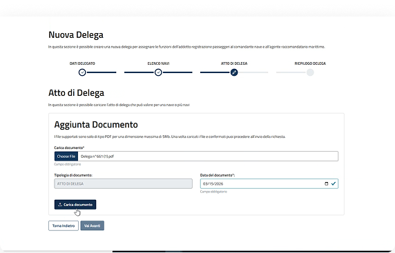
Tipologia file accettati:
Dimensioni massime:
5MB
Riepilogo
Aggiunta del documento
Selezionare il file che si intende allegare cliccando il pulsante "Scegli file" e cliccare il pulsante "Carica documento".
Caricamento e visualizzazione del file
Dopo aver caricato il documento, quest'ultimo verrà visualizzato nella tabella "Atto di delega". È possibile eliminare o scaricare la delega tramite gli appositi pulsanti.
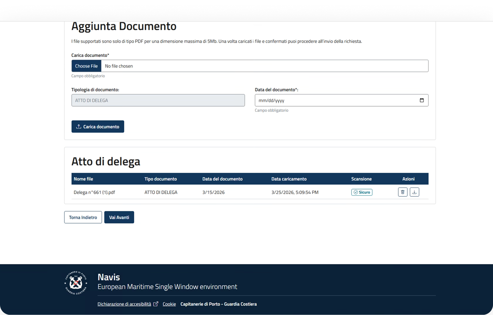
Riepilogo con Atto di delega
Dopo aver caricato l'atto di delega, il documento verrà visualizzato nell'ultimo step di riepilogo. Cliccare il pulsante "Salva" per salvare la delega.
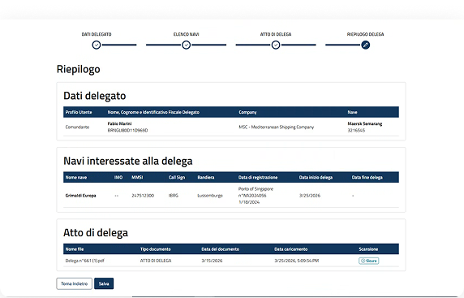
02.
Ricerca e consultazione deleghe
Panoramica sulla ricerca e sulla consultazione delle deleghe.
Punto di accesso
La voce di menù
Dalla dashboard è possibile accedere alle principali sezioni tramite le voci di menu.
Menu a tendina
Cliccando sulla voce "Gestione e Consultazione" viene visualizzato un menu a tendina, nella sezione "Gestione Deleghe", è possibile accedere alla voce "Gestione Deleghe".

Ricerca e consultazione Deleghe
Funzionalità in pagina
È possibile avviare subito la ricerca oppure aggiungere ulteriori filtri per rendere i risultati più precisi. La schermata è suddivisa nelle seguenti tre sezioni:
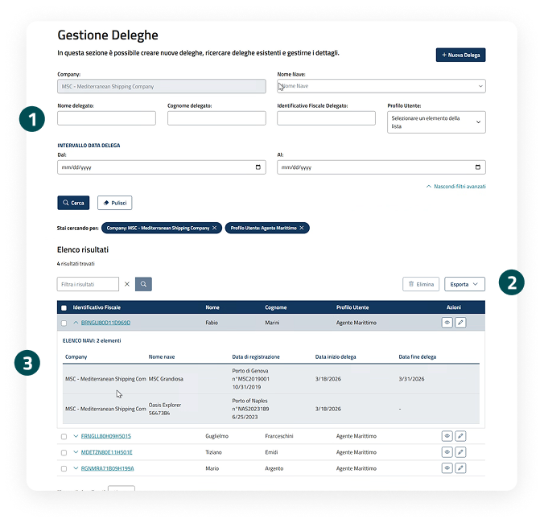
Sezione filtri
La sezione Filtri consente di ricercare le deleghe secondo diversi criteri. Sono disponibili filtri base, come Company, Nome Nave, Nome e Cognome delegato, Identificativo delegato e Profilo utente, e filtri avanzati per affinare la ricerca per Intervallo data delega. I filtri applicati sono visualizzati e cancellabili.
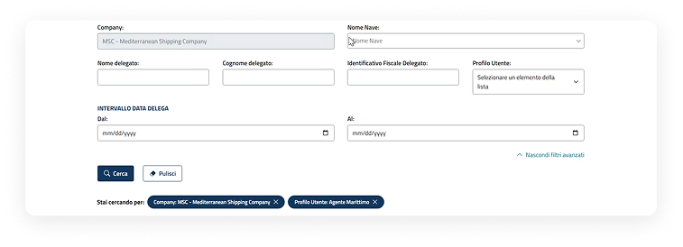
Azioni sulla tabella dei risultati
È possibile esportare i risultati di ricerca attraverso il pulsante "Esporta" e, dopo aver selezionato una o più deleghe, è possibile eliminarle tramite il pulsante "Elimina". È possibile filtrare ulteriormente i risultati di ricerca valorizzando il relativo campo.
Visualizzazione delega tramite tabella
I risultati della ricerca vengono presentati in una tabella, mostrando le informazioni principali e le azioni disponibili: visualizzazione dettaglio tramite icona dell'occhio e modifica della delega tramite icona della matita. All'interno dell'accordion vengono visualizzate le navi per la quale è stato delegato l'utente.
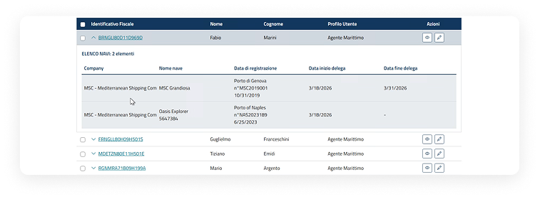
Ricerca e consultazione Deleghe
Visualizzazione dettaglio operazioni
All'interno della pagina sono consultabili le seguenti informazioni:
- Dati generali
- Dati delegante
- Dati delegato
- Navi interessate alla delega
Possibili azioni sulla Delega:
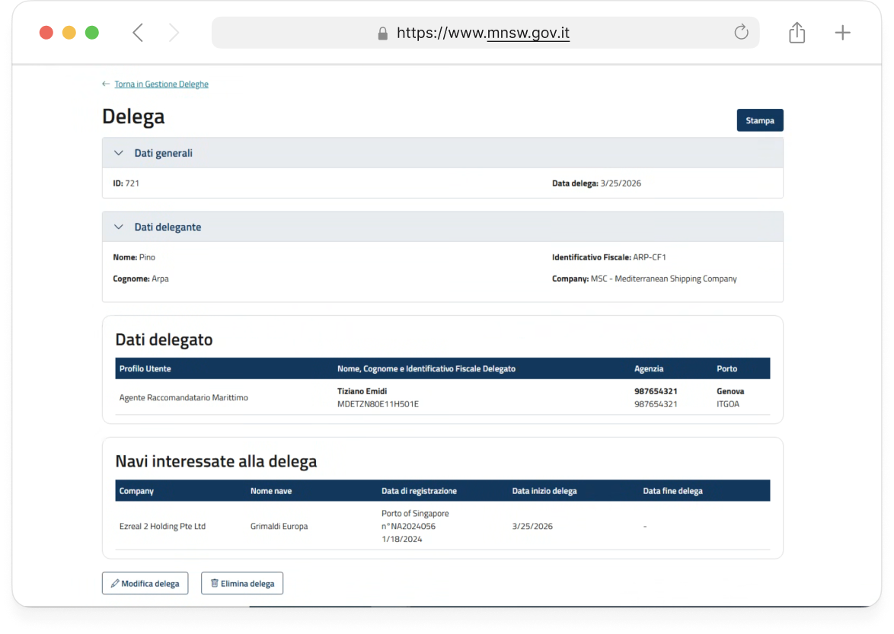
03.
Modifica deleghe
Panoramica sulla modifica di una delega esistente.
Punto di Accesso alla modifica delle deleghe
Attivazione della "Modifica" dall'elenco risultati delle deleghe
Nell'elenco risultati delle deleghe è possibile accedere al dettaglio in modalità modifica cliccando sull'"icona della matita".
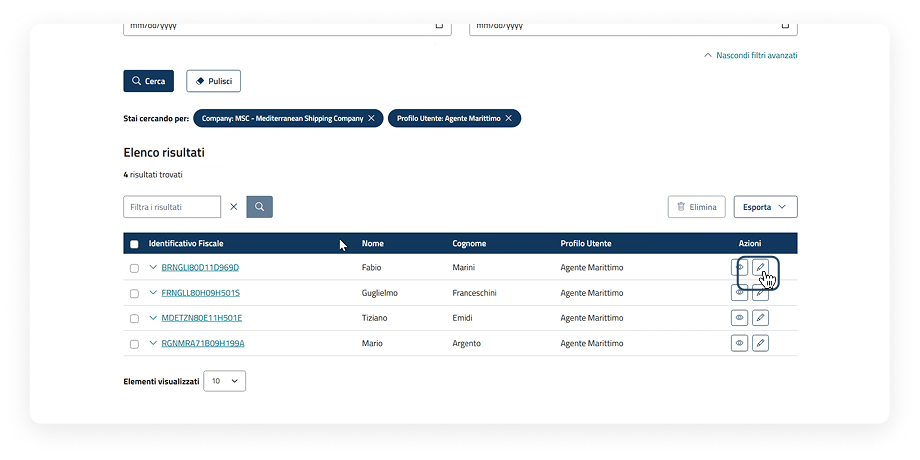
Attivazione della "modifica" da pagina di dettaglio delle deleghe
Nell'elenco risultati delle deleghe è possibile accedere al dettaglio in modalità visualizzazione cliccando sull'"icona dell'occhio". All'interno del dettaglio per procedere con la modifica è necessario cliccare sul pulsante "Modifica delega".
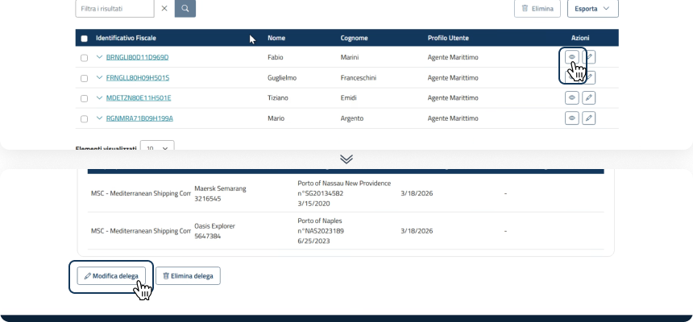
Modifica delega
Passaggi per modificare una delega
All'interno della pagina di dettaglio in modalità Modifica, il processo di aggiornamento delle informazioni seguirà lo stesso flusso guidato a step, descritto nel flusso di Focus su "Inserimento deleghe" .
L'unica informazione che non sarà possibile modificare è la selezione dei porti associati al profilo utente.
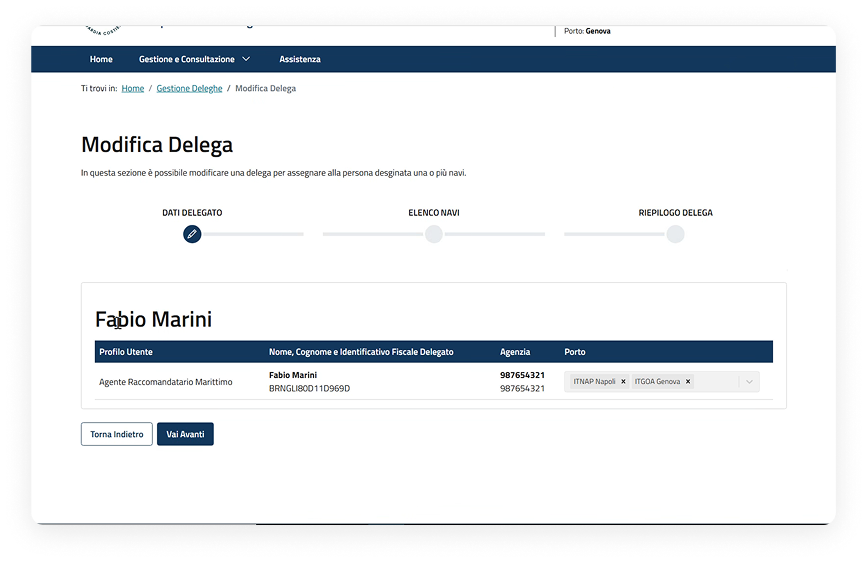
04.
Cancellazione deleghe
Panoramica sulla cancellazione di una delega.
Cancellazione deleghe
Cancellazione di una delega da dettaglio
Dopo aver creato una delega, l'utente può eliminarla tramite i seguenti passaggi:
Eliminazione da dettaglio delega
Nell'elenco risultati di ricerca delle deleghe è possibile accedere al dettaglio cliccando sull'"icona dell'occhio". All'interno del dettaglio per procedere con l'eliminazione è necessario cliccare sul pulsante "Elimina delega".
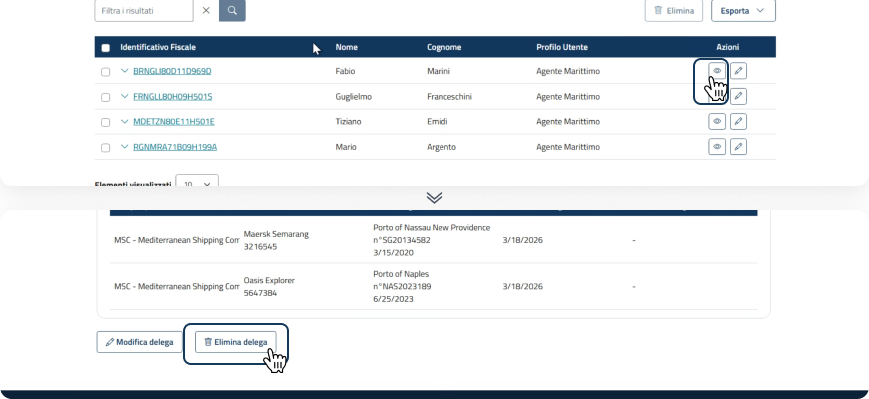
Finestra di conferma eliminazione e successo
Il sistema mostra una finestra in cui l'utente deve confermare di essere sicuro di voler eliminare l'operazione. Cliccare "Elimina delega" per proseguire. Una volta eliminata, non sarà più possibile recuperarla.
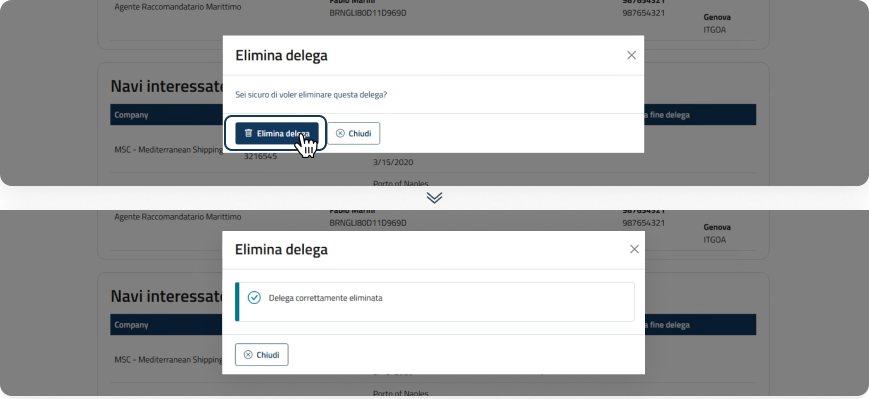
Cancellazione deleghe
Cancellazione massiva di una delega
Dopo aver creato una o più deleghe, l'utente può eliminarle massivamente tramite i seguenti passaggi:
Eliminazione dall'elenco risultati
Nell'elenco risultati di ricerca, dopo aver selezionato uno o più deleghe tramite le checkbox, per eliminare cliccare il pulsante "Elimina".
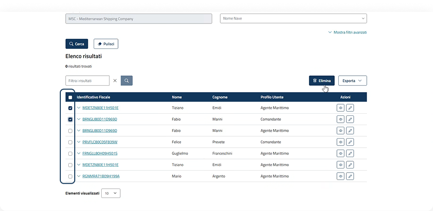
Finestra di conferma eliminazione e successo
Il sistema mostra una finestra in cui l'utente deve confermare di essere sicuro di voler eliminare l'operazione. Cliccare "Elimina delega" per proseguire. Una volta eliminata, il sistema mostra una finestra di successo.
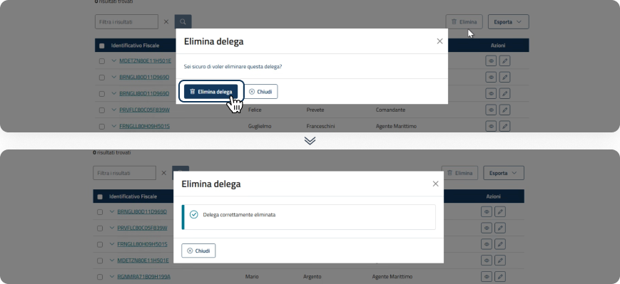